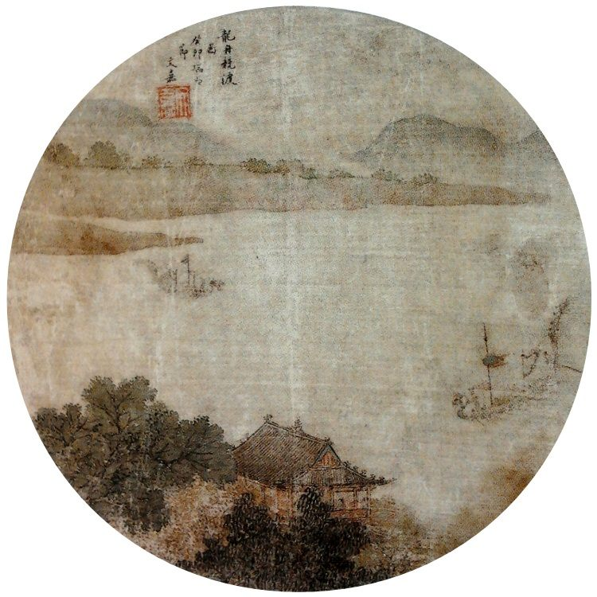

단오 앞두고 되살아나는 세시 풍속…'금기'를 둘러싼 이야기들
단오를 전후해 전해 내려오는 풍습과 금기가 다시 입길에 오른다. 과학적 근거보다 문화적 의미로 읽어야 할 이야기들이다.
강패산 기자 · 2026.06.18
橋문화·세시

자유시보는 단오를 전후한 사흘간 전통적으로 삼가는 일들에 관한 민간의 이야기를 소개했다. 띠(12지)에 얽힌 속설 등 세시 풍속이 명절을 맞아 다시 화제가 됐다.
광고 문의 · 300×250세시 풍속과 금기는 농경·기후의 경험이 문화로 굳어진 산물이다. 과학적 사실이라기보다, 공동체가 계절의 변화를 받아들이고 안전을 기원해 온 방식으로 이해된다.
현대에는 이런 풍습이 명절의 정취와 가족 간 이야깃거리로 이어진다. 믿고 안 믿고를 떠나, 문화적 기억을 공유하는 매개가 된다.
華橋時報는 화인 문화권이 공유하는 명절 풍속을 문화의 시선으로 전한다. 풍습의 유래와 의미를 알면 명절은 더 풍성해진다.
출처·참고 (사실 확인용 — 본문은 직접 재작성)
· 自由時報
· 自由時報